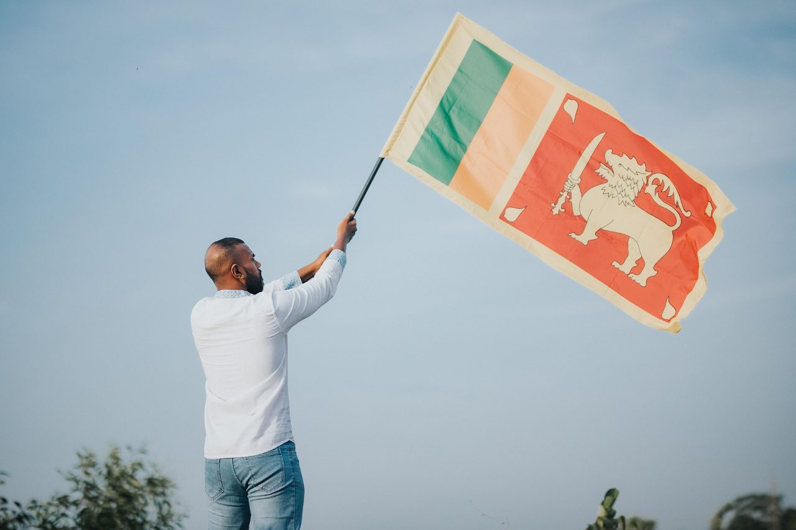
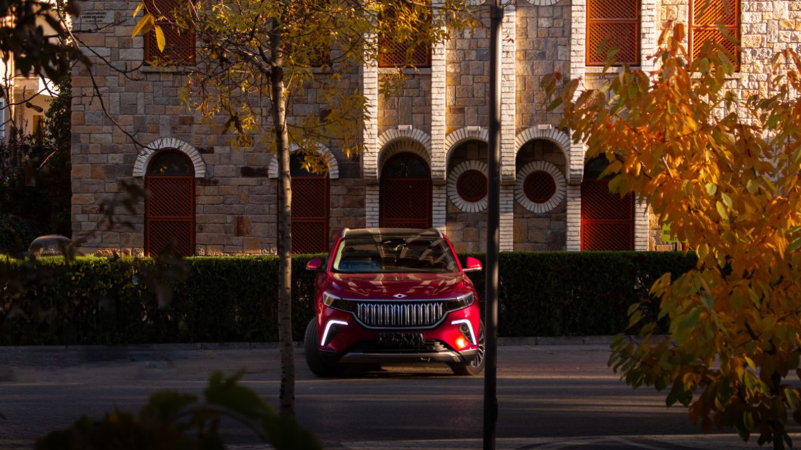

Ekonomi
KASIM İNDİRİMLERİ ÖNCESİ KRİTİK UYARI: "SAHTE İNDİRİM" VE TAKLİT SİTE TUZAĞINA DİKKAT!
E-ticaret sektöründe hareketliliğin tavan yaptığı Kasım ayı kampanyaları öncesinde tüketici örgütleri ve uzmanlar alarm verdi.

Türkiye, Hint Okyanusu’nun kritik ticaret ve lojistik noktalarından biri olan Sri Lanka ile ilişkilerini güçlendirecek önemli bir iş birliği protokolüne imza attı. Ulaştırma ve Altyapı Bakanlığı nezdinde yürütülen görüşmeler neticesinde, iki ülke arasındaki İkili Hava Ulaştırma Anlaşması güncellenerek sivil havacılık ve lojistik süreçlerini kapsayan yeni bir iş birliği dönemi başlatıldı.
İsrail’de sandıkların açılmasıyla birlikte oy sayımında son aşamaya gelinirken, ülke siyasetindeki derin kutuplaşma sandık sonuçlarına da yansıdı. İlk saatlerde Netanyahu ittifakının önde olduğuna dair gelen veriler, oy sayım oranının yükselmesi ve sandıkların büyük bölümünün tamamlanmasıyla yerini kilitlenmiş bir parlamenter tabloya bıraktı
Brezilya siyasi tarihinin en çekişmeli seçim maratonlarından birinde sanal dünyanın gücü sandık sonuçlarını doğrudan etkiledi. Yıllardır aşırı sağın ve rakip kanadın hakimiyetinde olan sosyal medya alanı, Luiz Inácio Lula da Silva cephesinin kurduğu agresif ve doğrudan dijital ağ ile adeta baştan aşağı yeniden şekillendi. Bu mobilizasyonun merkezinde ise 10 milyonu aşkın kullanıcıya ulaşan ve kısa sürede "Lula’nın Ordusu" (Lula's Army) olarak adlandırılan devasa WhatsApp kanalları yer aldı.

Türkiye’nin ilk yerli elektrikli otomobil markası Togg, Gemlik Teknoloji Kampüsü’nde başlayan seri üretim serüveninde büyümesini sürdürüyor. Seri üretime geçişinin üzerinden geçen 4 yılda 126 bin 122 adet teslimat sayısına ulaşan marka, iç pazardaki hakimiyetini güçlendirirken yeni model stratejileriyle de dikkat çekiyor.
ABD Başkanı Donald Trump, Rusya-Ukrayna savaşını sonlandırmaya yönelik yürütülen diplomatik çabalarda dönüm noktası niteliğinde olabilecek bir duyuruda bulundu. Trump, Rusya Devlet Başkanı Vladimir Putin ile Ukrayna Devlet Başkanı Volodimir Zelenskiy'nin katılımıyla çok yakında bir zirve düzenleneceğini açıkladı.
E-ticaret sektöründe hareketliliğin tavan yaptığı Kasım ayı kampanyaları öncesinde tüketici örgütleri ve uzmanlar alarm verdi.